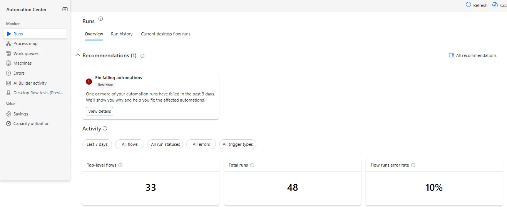

- Power Automate
- Level 6 · ALM and governance · 7 of 7
Monitoring with Automation center
Run history shows one flow at a time. Once you look after many flows you need one view: what ran, what failed, what needs attention. Automation center gives that view for the current environment.
The Runs overview
WhatA dashboard of runs, errors and recommendations across every flow in the environment.
WhySpot failing flows and common root causes without opening runs one by one.
DemoThe demo environment: 33 flows, 48 runs, 10% error rate.

| Area | Use it to |
|---|---|
| Recommendations | See suggested fixes, such as failing automations |
| Activity filters | Narrow by time, flow, status, error, trigger type |
| Tiles | Spot trends: flows, runs, error rate |
| Run history tab | One list of runs across flows |
| Errors | Group failures by error, so one cause doesn't look like many |
A simple monitoring routine
Each morning
Open Automation center: check error rate and recommendations
Open Errors: fix the most common error first
Critical flows also alert from inside (Error alerts and Terminate)
For reports across all runs, see Monitoring flows at scale (Level 10).
New to this? Start from the basics optional
Top-level flow: triggered directly, not called as a child.
Error rate: the share of runs that failed.
Common mistakes
- Relying on the owner's failure emails alone.
- Treating every failed run as a new problem.
- Monitoring only production.